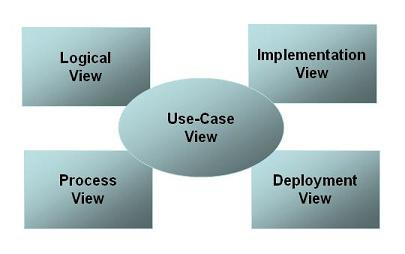

你可以考虑以下视图（并非所有视图都和所有系统或涉众相关）。这组视图被称为4+1软件架构视图 [KRU95]。

-
Use-case view 用例视图: 描述系统功能、外部接口和主要用户。在使用4+1视图时，此视图是必须的，因为架构的所有元素都应该源于需求。
-
Logical view 逻辑视图:
描述系统是如何由实现单元组织起来的。其元素是：包、类和接口。元素之间的关系包括依赖关系、接口实现关系、部分-整体关系等等。注意：在4+1软件架构视图中，此视图是必须的。
-
Implementation view 实现视图:
描述开发工件在文件系统中是如何组织的。其元素是文件和目录（任何配置项）。这包括开发工件和部署工件。在使用4+1软件架构视图时，此视图是可选的。
-
Process view 进程视图:
用一组元素的运行时行为和交互来描述运行时系统的结构。运行时结构常常看起来有点象代码结构。它由快速变化网络的通讯对象所组成。这些元素是运行时存在的组件（进程、线程、EJB、servlets、DLLs等等）、数据存储、以及复杂的连接器，如队列。这些元素之间的交互随技术的不同而不同。此视图对于思考运行时的系统属性非常有用，例如性能和可靠性。在使用4+1视图时，此视图是可选的。
-
Deployment view 部署视图: 描述系统如何映射到硬件。在使用4+1软件架构视图时，此视图是可选的。
此外，你可能还需要：
|